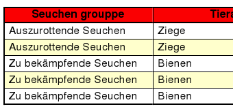

Configuration¶
The server side uses a YAML configuration file that defines the page layouts and allowed values. This file is usually called config.yaml.
General structure¶
Here is the general structure:
dpis:
- 254
- 190
{...}
?maxSvgWidth: 2048 # set the maximum dimensions to 2048 points, this is useful when using MapServer and a maximum dimension is there
?maxSvgHeight: 2048
?integerSvg: false # the library in MapServer <= 5.6 does not support floating point values in the SVG coordinate space, set this to true if using a WMS that does not support floating point values in SVG coordinates
?ignoreCapabilities: false # assume client is correct and do not load capabilities. This is not recommended to be used unless you it fails when false (false is default)
?disableLayersMerging: false # WMS layers with mergable parameters will be merged by default. Set this to true to disable attempts to merge.
?maxPrintTimeBeforeWarningInSeconds: 30 # if print jobs take longer than this then a warning in the logs will be written along with the spec.
?printTimeoutMinutes: 5 # The maximum time to allow a print job to take before cancelling the print job. The default is 5 (minutes)
?formats:
- pdf
- png
{...}
scales:
- 25000
- 50000
{...}
hosts:
- {HOST_WHITELIST_DEFINITION}
{...}
?localHostForward: # For request on map.example.com we build an http request on localhost with the header Host=map.example.com, this is to don't pass throw the proxy.
? from:
? - map.example.com
? https2http: True # For above hosts on request on https we build a request on http
?headers: ['Cookie', 'Referer'] # The header that will be copyed to the tiles http requests
?keys:
? - !key
? host: !dnsMatch
? host: maps.google.com
? port: 80
? domain: !dnsMatch
? host: localhost
? key: 1234456
? id: gmd-xyz
?fonts:
? - {PATH}
?globalParallelFetches: 5
?perHostParallelFetches: 5
?tilecacheMerging: false
?connectionTimeout: 30000 MF_V1.2
?socketTimeout: 180000 MF_V1.2
?outputFilename: Mapfish-print MF_V1.2
?disableScaleLocking: false
?brokenUrlPlaceholder: default MF_V2.0
?proxyBaseUrl: http://mapfishprint.org MF_V2.0
?tmsDefaultOriginX: 0.0f MF_V2.0
?tmsDefaultOriginY: 0.0f MF_V2.0
?security:
? - !basicAuth
? matcher: !dnsMatch
? host: www.camptocamp.com
? post: 443
? username: xyz
? password: zyx
? preemptive: true
? - !basicAuth
? username: abc
? password: bca
layouts:
{LAYOUT_NAME}:
? : Mapfish-print.pdf MF_V1.2
? metaData:
? {METADATA_DEFINITION}
? titlePage:
? {PAGE_DEFINITION}
mainPage:
? rotation: false
{PAGE_DEFINITION}
? lastPage:
? {PAGE_DEFINITION}
{...}
Optional parts are shown with a question mark in the left margin. The question marks must not be put in the configuration file. Their default values is shown.
Note: Sets of values like DPI can be entered in one of two forms:
dpi: [1,2,3,...]
or
dpis:
- 254
- 190
DPI and PDF Dimensions¶
A chosen DPI value from the above configuration is used in WMS GetMap requests as an added format_options (GeoServer) or map_resolution (MapServer) parameter. This is used for symbol/label-rescaling suitable for high resolution printouts, see Geoserver format_options specification (Geoserver 2.1) and MapServer defresolution keyword (MapServer 5.6) for more information.
In general, PDF dimensions and positions are specified in points. 72 points == 1 inch == 25.4 mm.
Getting Maps¶
The list of {HOST_WHITELIST_DEFINITION} defines the allowed URLs for getting maps. Its format will be defined in the next sub-section.
The formats element lists the values formats that the server permits.
If omitted only ‘pdf’ is permitted.
If the single element ‘*’ (quotes are required) is present then all formats that the server can produce can be requested.
The formats the server can produce depends to a large degree on how the Java is configured.
PDF is supported on all systems but for image output formats JAI and ImageIO is used which means both must be on the server for them to be available. You can get the list of supported formats by running the standalone client with the –clientConfig flag enabled (you will need to supply a yaml config file as well). If you are using the servlet then do a get info request to see the list of formats (with the ‘*’ as the outputFormats parameter in the config file).
“globalParallelFetches” and “perHostParallelFetches” are used to tune the parallel loading of the map tiles/images. If you want to disable the parallel loading, set “globalParallelFetches” to 1.
New versions of tilecache added the support for merging multiple layers in a single WMS request. If you want to use this functionality, set the “tilecacheMerging” attribute to true.
“connectionTimeout” and “socketTimeout” can be used to tune the timeouts for reading tiles from map servers.
“proxyBaseUrl” the optional url of the proxy between mapfish-print and the internet. This is the url base that will be in the info.json response. On occasion the url or port of the web server containing mapfish-print is not the server that is public to the internet and the requests are proxied to the mapfish-print webserver. In this case it is important for the info.json request to return the public URL instead of the url of the webserver.
“tmsDefaultOriginX” By default this is null. If non-null then TmsMapReader will use this as the origin x value if null then the origin will be derived from the maxExtent parameter.
“tmsDefaultOriginY” By default this is null. If non-null then TmsMapReader will use this as the origin y value if null then the origin will be derived from the maxExtent parameter.
Layouts¶
You can have as many layouts as you want. Their name must be unique and will be used on the client side.
A layout can have a “titlePage” that will be added at the beginning of the generated document. It cannot contain any map.
The “mainPage” section is mandatory and will be used once for each page requested. The details of a {PAGE_DEFINITION} section can be found in another sub-section of this document.
A layout “lastPage”, will be added for the end of the document, and cannot contain any map.
If you want to let the user rotate the map (for a given layout), you have to set the “rotate” field to “true” in the corresponding “mainPage” section.
Output filename¶
If the ‘outputFilename’ parameter is defined in the main body then that name will be used by the MapPrintServlet when sending the pdf to the client. It will be the name of the file that the client downloads. If the ‘outputFilename’ parameter is defined in a layout then that value will override the default name. In both cases the .pdf suffic is optional; if not present the server will append .pdf to the name.
In all cases the json request can override the filename defined in the configuration file by posting a ‘outputFilename’ attribute in the posted JSON. If the outputFilename has ${date}, ${time} or ${dateTime} in it, it will be replaced with the current date using the related DateFormat.get*Instance().format() method. If a pattern is provided it will be passed to SimpleDataFormat for processing. A few examples follow:
outputFilename: “host-${yyyyMMdd}.pdf” # results in host-20111213.pdf
outputFilename: “host-${date}” # results in host-Dec_13_2011.pdf (actual output depends on local of server)
outputFilename: “host-${dateTime}” # results in host-Dec_13_2011_1:10:50_PM.pdf (actual output depends on local of server)
outputFilename: “host-${time}.pdf” # results in host-1:11:14_PM.pdf (actual output depends on local of server)
outputFilename: “host-${yyMMdd-hhmmss}”# results in host-111213-011154.pdf (actual output depends on local of server)
“disableScaleLocking” allows you to bypass the choosing of scale from the available factors, and simply use the suggested value produced inside MapBlock.java.
Broken images¶
“brokenUrlPlaceholder” the placeholder image to use in the case of a broken url. By default, when a url request fails, an error is thrown and the pdf process terminates. However if this parameter is set then instead a placeholder image is returned.
Non-null values are:
“default” - use the system default image.
“throw” - throw an exception.
<url> - obtain the image from the supplied url. If this url is broken then an exception will be thrown. This can be anytype of valid url from a file url to https url.
Security¶
Both Keys and Security are options for accessing protected services. Keys are currently for Google maps premium accounts and Security is for other types and is more general Currently only BasicAuth is supported but other strategies can easily be added
security:
- !basicAuth
matcher: !dnsMatch
host: www.camptocamp.com
post: 443
username: xyz
password: zyx
preemptive: true
- !basicAuth
username: abc
password: cba
The above example has 2 security configuration. Each option is tested (in order) to see if it can be used for the given URI and if it applies it is used to configure requests for the URI. In the above example the first configuration will be used if the URI matches the hostmatcher provided if not then the second configuration will be applied. The last configuration has no host matcher so it is applied to all URIs.
A basicAuth security configuration consists of 4 options
matcher - a host matcher for determining which requests need the security to be applied
username - username for basicauth
password - password for basicauth
preemptive - optional, but for cases where the credentials need to be sent without the challenge
X Forwarded For¶
Added addForwardedFor optional flag (true / false) to enable by IP security.
When the option is true, every request to WMS services have an X-Forwarded-For header with the client IP / name, so that IP based security rules are correctly applied by the underlying service.
Keys¶
Google maps currently requires a private key to be used (we only support users Google maps premium accounts).
The keys section allows a key to be mapped to hosts. The hosts are identified with host matchers that are described in the <configuration.html#host-whitelist-definition> sub-section.
In addition a domain hostmatcher can be used to select a key based on the domain of the local server. This can be useful if the same configuration is used in a test environment and a production environment with differing domains. For example mapfish.org and mapfish.net.
Finally google maps (for example) requires a client id as well that is associated with the private key. There for in the case of google premium services a legal key would be:
keys:
- !key
key: yxcvyxvcyxvyx
id: gme-xxxcs
Thanks to the hosts and domain matcher it is possible to have a key for google maps and (for future proofing) a different key for a different service.
Fonts definition¶
The “fonts” section is optional. It contains the path of the fonts you want to use. The entries can point to files (TTF, OTF, TTC, AFM, PFM) or directories. Don’t point to directories containing too many files since it will slow down the start time. By default, PDF gives you access to the following fonts (Cp1252 encoding only):
Courrier (-Bold, -Oblique, -BoldOblique)
Helvetica (-Bold, -Oblique, -BoldOblique)
Times (-Roman, -Bold, -Oblique, -BoldOblique)
Symbol
ZapfDingbats
Host whitelist definition¶
In this section, you can put as many entries as you want, even for the same type of filter. If at least one matches, the Map server can be used.
This section is not for defining which client can request maps. It is just here to avoid having the print module used as a proxy to access documents from computers behind firewalls.
There are 3 ways to whitelist a host.
Allowing every local services:¶
- !localMatch
dummy: true
The “dummy” parameter is ignored, but mandatory to avoid a limitation in the YAML format.
Allowing by DNS name:¶
- !dnsMatch
host: labs.metacarta.com
Allowing by IP address:¶
- !ipMatch
ip: www.camptocamp.org
? mask: 255.255.255.255
The “ip” parameter can be a DNS name that will be resolved or directly an IP address.
All the methods accept the following optional parameters:
port: to limit to a certain TCP port
pathRegexp: a regexp that must match the path part of the URL (before the ‘?’).
Metadata definition¶
Allow to add some metadata to the generated PDF. They are visible in acroread in the File->Properties menu.
The structure is like that:
metaData:
? title: ''
? author: ''
? subject: ''
? keywords: ''
? creator: ''
? supportLegacyReader: false
All fields are optional and can use global variables, as defined in the Block definition chapter. Page specific variables are not accessible.
Page definition¶
The structure is like that:
pageSize: A4
? landscape: false
? marginLeft: 40
? marginRight: 40
? marginTop: 20
? marginBottom: 20
? backgroundPdf: template.pdf
? condition: null
? header:
height: 50
items:
- {BLOCK_DEFINITION}
{...}
items:
- {BLOCK_DEFINITION}
{...}
? footer:
height: 50
items:
- {BLOCK_DEFINITION}
{...}
? includeTitlePage: true
? includeLastPage: true
? includeExtraPage: true
With the “condition” we can completely hide a page, same behavior than in block.
If “backgroundPdf” is specified, the first page of the given PDF file will be added as background of every page.
The “header” and “footer” sections are optional. If the “items” that are in the main section are too big, more pages are generated. The header and footer will be drawn on those pages as well.
Here is a short list of supported pageSizes:
name |
width |
height |
|---|---|---|
LETTER |
612 |
792 |
LEGAL |
612 |
1008 |
A4 |
595 |
842 |
A3 |
842 |
1191 |
The complete list can be found in http://api.itextpdf.com/itext/com/itextpdf/text/PageSize.html. If you want to use a custom page size, you can set pageSize to the width and the height separated by a space.
Skip Rendering Of Pages¶
New flag params to skip rendering of particular pages have been implemented:
includeTitlePage
includeLastPage
includeExtraPage
They are all defaulted to true.
Extra Pages¶
Additional Pages are supported in many different places. They can be rendered due to legends overflowing on multiple pages, or by the dynamic images functionality.
Where additional pages can be generated, the generating block will be spread among all the created pages (for example, the legend block will put legends on different pages, if configured to do so). If you want to put additional blocks on additional page, you can specify the renderOnExtraPage flag on the desired blocks. Only first level blocks are considered.
In addition to that, an explicit extraPage block can be used in config.yaml to add a custom page between other pages. The renderOn property specify the exact position for rendering (beforeMainPage, beforeLastPage or afterLastPage).
Block definition¶
The next sub-sections document the possible types of blocks.
In general, text values or URLs can contain values taken from the spec structure coming with the client’s request. A syntax similar to shell is used: ${variableName}. If the current page is a titlePage, only the root values are taken. If it’s a mainPage, the service will first look in the current page section then in the root values. Here is how to use this functionality:
text: 'The value of mapTitle is: ${mapTitle}'
Some virtual variables can be used:
${pageNum}: The current page number.
${pageTot}: The total number of pages. Can be used only in text blocks.
${now}: The current date and time as defined by the machine’s locale.
${now FORMAT}: The current date and time as defined by the FORMAT string. The syntax is here: http://java.sun.com/j2se/1.5.0/docs/api/java/text/SimpleDateFormat.html.
${configDir}: The absolute path to the directory of the configuration file.
${format PRINTF VAR}: Format the value of VAR using the provided PRINTF format (for example: %,d).
All the blocks can have a condition attribute that takes a spec attribute name. If the attribute name exists and is not equal to “false” or “0”, the block is drawn. Otherwise, it is ignored. An exclamation mark may precede the condition to invert it, exclamation mark is part of yaml syntax, than the expression should be in quotes.
Example: show text block only if in the spec the attribute name “showText” is given, is not equal to “false” and not equal to “0”:
- !text
text: 'mytext'
condition: showText
Text block¶
- !text
? font: Helvetica
? fontSize: 12
? fontEncoding: Cp1252
? fontColor: black
? spacingAfter: 0
? align: left
? vertAlign: middle
? backgroundColor: #FFFFFF
text: 'Blahblah'
? asHTML: false
Typical “fontEncoding” values are:
Cp1250
Cp1252
Cp1257
Identity-H (horizontal UTF-8)
Identity-V (vertical UTF-8)
MacRoman
The “font” must refer to a standard PDF font or a declared font.
HTML In Text Blocks¶
The new configuration property asHTML (to be used in config.yaml text blocks) allows to automatically render the included text as HTML (when true), instead of simple text. HTML tags are interpreted and styled.
Image block¶
- !image
maxWidth: 200
maxHeight: 100
? spacingAfter: 0
? align: left
? vertAlign: middle
url: http://trac.mapfish.org/trac/mapfish/chrome/site/img/mapfish.png
Supported formats are PNG, GIF, Jpeg, Jpeg2000, BMP, WMF (vector), SVG and TIFF.
The original aspect ratio will be respected. The url can contain “${}” variables.
Simple colored box icons¶
This enhancement adds the feature of drawing a simple colored box, instead of an icon into a legend item.
To draw a colored box, include a color: #hexvalue property in the printing spec, instead of an icon: url property.
Base64¶
We added support for Base64 encoded images uris to PDFUtils so that embedded images can be included for styling vector points (for example).
Example url:
url: data:image/png;base64,<encoded image>
Images content¶
This enhancement allow you add SVG content inside the specification of the print. You need to add a name into the image to manage:
- !columns
width: 580
height: 271
absoluteX:70
absoluteY:400
items:
- !image
name: chart1
maxWidth: 580
maxHeight: 271
rotation: '${rotation}'
Spec:
{
...
chart1:{
content: '<svg>SVG content</svg>'
},
...
}
then, the content its rendered inside the print page with the layout configuration.
Columns block¶
- !columns
? config: {TABLE_CONFIG}
? widths: [25,25,25,25]
? backgroundColor: #FFFFFF
? absoluteX: null
? absoluteY: null
? width: {PAGE_WIDTH}
? spacingAfter: 0
? nbColumns: -1
items:
- {BLOCK_DEFINITION}
{...}
Can be called !table as well.
By default, the width of the columns will be equal.
Each item will be in its own column.
If the absoluteX, absoluteY and width are given, the columns block will be floating on top of the page at the specified position.
The widths attribute can be used to change the width of the columns (by default, they have the same width). It must contain one integer for each column. The width of a given column is tableWidth*columnWeight/sum(columnWeight).
Every block type is allowed except for map if the column has an absolute position.
Look at <http://trac.mapfish.org/trac/mapfish/wiki/PrintModuleServer#Tableconfiguration to know how to specify the config field.
Map block¶
Allowed only within a mainPage.
- !map
width: 0
height: 0
? name: map
? spacingAfter: 0
? align: left
? vertAlign: middle
? absoluteX: null
? absoluteY: null
? overviewMap: null
? backgroundColor: #FFFFFF
width and height are mandatory. You can use variable substitution in this part, but if you do so, the browser won’t receive the map size when it calls info.json. You’ll have to override mapfish.widgets.print.Base.configReceived and set the map width and height of your layouts.
If the absoluteX and absoluteY are given, the map block will be floating on top of the page at the specified position.
The name is what will be displayed in the Acrobat’s reader layer panel. The map layers will be displayed bellow it.
If overviewMap is specified, the map will be an overview of the extent augmented by the given factor. There are few cases to consider with map overviews:
If there is no overview overrides and no OL.Control.MapOverview, then all the layers will figure in the PDF map overview.
If there are overview overrides, the OL map overview control is ignored.
If there are no overview overrides and there is an OL.Control.MapOverview (takes the first one), then the layers defined in the control are taken into account. By default it is the current base layer.
Scalebar block¶
Display a scalebar.
Allowed only within a mainPage.
- !scalebar
maxSize: 150
? type: line
? intervals: 3
? subIntervals: false
? units: m
? barSize: 5
? lineWidth: 1
? barDirection: up
? textDirection: up
? labelDistance: 3
? font: Helvetica
? fontSize: 12
? fontColor: black
? color: #000000
? barBgColor: null
? spacingAfter: 0
? align: left
? vertAlign: middle
? backgroundColor: #FFFFFF
? lockUnits: true
? preferredIntervals: [1,2,5,10]
? preferredIntervalFractions: 0.0
The scalebar, will adapt its width up to maxSize (includes the labels) in order to have a multiple of 1, 2 or 5 values at each graduation. For example:
0, 1, 2, …
0, 2, 4, …
0, 5, 10, …
0, 10, 20, …
The barSize is the thickness of the bar or the height of the tick marks on the line. The lineWith is for the thickness of the lines (or bar border).
Units can be any of:
m (mm, cm, m or km)
ft (in, ft, yd, mi)
degrees (min, sec, °)
If the value is too big or too small, the module will switch to one of the unit in parenthesis (the same unit is used for every intervals). If this behaviour is not desired, the lockUnits parameter will force the declared unit (or map unit if no unit is declared) to be used for the scalebar.
The number of intervals can be set to anything >=2. Labels are drawn only at main intervals. If there is no space to display a label at a certain interval, this label won’t be displayed. If subIntervals are enabled, their number will depend on the length of an interval.
The type can be:
line: A simple line with graduations
bar: A thick bar with a suite of color and barBgColor blocks.
bar_sub: Like bar, but with little lines for labels.
The bar and/or text orientation can be set to “up”, “down”, “left” or “right”.
The align attribute is for placing the whole scalebar withing the surrounding column or page. The vertAlign attribute is used only when placed in a column.
Labels are always centered on the graduation, at a distance specified by labelDistance.
Custom intervals in ScalebarBlock¶
With this improvement we added two new configuration parameters to !scalebar blocks that allow to customize the scalebar preferred bar lengths.
Now this set can be customized using the preferredIntervals property. This property is an array with the new (integer) allowed lengths. By default these were chosen in the 1,`2`,`5`,`10` set.
Another property, preferredIntervalFractions, can be specified to also use fractional intervals. By default only 0.0 is used, and thus only integer lengths are allowed.
Example:
.. code-block:: yaml
preferredIntervals: [1,3,5,10] preferredIntervalFractions: [0.2,0.5]
Attributes block¶
Allows to display a table of the displayed feature’s attributes.
Allowed only within a mainPage.
- !attributes
source: results
? tableConfig: {TABLE_CONFIG}
columnDefs:
{COLUMN_NAME}:
? columnWeight: 0 MF_V1.2
header: {BLOCK_DEFINITION}
cell: {BLOCK_DEFINITION}
{...}
Look here for how to specify the tableConfig field.
The columnWeigth (MF_V1.2 only) allows to define a weight for the column width. If you specify it for one column, you have to specify it for all of them. The width of a given column is tableWidth*columnWeight/sum(columnWeight).
The source value defines the name of the entry in the root of the client’s spec. For example, it would look like that:
{
...
pages: [
{
...
results: {
data: [
{id:1, name: 'blah', icon: 'icon_pan'},
...
],
columns: ['id', 'name', 'icon']
}
}
]
...
}
With this spec you would have to define 3 columnDefs with the names id, name and icon. Each cell definition blocks have access to all the values of the current row.
The spec part is filled automatically by the 2 MapFish widgets when their grids parameter is set.
Here is a crazy example of columnDef that will show the name of the icon and it’s bitmap side-by-side inside a single column:
columnDefs:
icon:
header: !text
text: Symbol
backgroundColor: #A0A0A0
cell: !columns
items:
- !text
text: '${icon}'
- !image
align: center
maxWidth: 15
maxHeight: 15
url: 'http://www.mapfish.org/svn/mapfish/trunk/MapFish/client/mfbase/mapfish/img/${icon}.png'
A more complex example can be found in SVN: config.yaml spec.json
The print widgets are able to fill the spec for you based on a dictionary of Ext.grid.GridPanel. Just pass them through the grids parameter.
Group Rendering In Attribute Blocks¶
Attribute blocks now support grouping, by a specific attribute. Rows should be sorted by that attribute for grouping to work (no automatic sort is accomplished by the printing library).
To identify the grouping attribute, use the groupBy property.
Each group can be prefixed by a title, using the groupTitle property. You can specify any block in the groupTitle property, to render any kind of content as a title.
You can also skip table header using the includeHeader flag (true by default).
Finally you can force a page break before any new group, using the groupOnNewPage flag.
Legends block¶
Display each layers along with its classes (icons and labels).
- !legends
? backgroundColor: #FFFFFF
? borders: false
? horizontalAlignment: center
? maxWidth: 0
? maxHeight: 0
? iconMaxWidth: 0
? iconMaxHeight: 8
? iconPadding: 8 7 6 5
? textMaxWidth: 8
? textMaxHeight: 8
? textPadding: 8 7 6 5
? defaultScale: 1.0
? inline: true
? classIndentation: 20
? layerSpaceBefore: 5
? layerSpace: 5
? classSpace: 2
? layerFont: Helvetica
? layerFontSize: 10
? classFont: Helvetica
? classFontSize: 8
? fontEncoding: Cp1252
? columnMargin: 3
? overflow: false
? maxColumns: 1
? reorderColumns: false
? dontBreakItems: false
? fitWidth: 0
? fitHeight: 0
borders is mainly for debugging purpouses and shows all borders in the legend tables. This can be either ‘true’ or ‘false’.
horizontalAlignment can be left, right or center (default) and aligns all items left, right or in the center.
iconMaxWidth, iconMaxHeight, defaultScale with value of 0 indicate that the value will be ignored, i.e. the values are automatically set to the equivalent of Infinity, Infinity and 1 respectively. If the legends URL passed to MapFish (see http://mapfish.org/doc/print/protocol.html#print-pdf) are obtained from a WMS GetLegendGraphic request, the width/height are only indicative (even more when a label text is included with LEGEND_OPTIONS/forceLabels parameter) and it would be safer, in order to preserve scale coherence between legends and map, to set iconMaxWidth and iconMaxHeight to zero.
textMaxWidth/Height and iconMaxWidth/Height define how wide/high the text/icon cells of a legend item can be. At this point textMaxHeight is ignored.
textPadding and iconPadding can be used like standard CSS padding. In the above example 8 is the padding top, 7 padding right, 6 padding bottom and 5 padding left.
if inline is true icons and text are rendered on the same line, BUT multicolumn is still enabled.
if maxWidth is set the whole legend gets a maximum width, just like other blocks. Note that maxWidth does not have any impact on icons size, thus icons may overflow outside the legends block.
if maxHeight is set the whole legend gets a maximum height. This forces more than one column to appear if the legend is higher than the specified value. This can be used to enable the multi-column layout. 0 makes the maxHeight= max value, i.e. the equivalent of infinity.
if defaultScale is non null it means that the legend image will be scaled so it doesn’t take the full space. This can be overriden for individual classes in the spec JSON sent to the print module by adding an attribute called ‘scale’ and giving it a number. In conjunction with iconMaxWidth/Height this can be used to control average and also maximum width/height. If defaultScale equals 1, one pixel is scaled to one point (1/72 inch) in generated PDF. By default, as GeoServer legends are generated with ~90 dpi resolution (exactly 25.4/0.28), setting defaultScale value to 0.7937 (72*0.28/25.4) produces legend icons of same size as corresponding map icons. As the LEGEND_OPTIONS/dpi GeoServer parameter is not handled by MapFish, the resolution will necessary be ~91 dpi, which may cause visual quality difference with the map.
For this to work, you need to set the layerTree config option on MF print widgets, more precisely the legends should be present in the print.pdf JSON request.
layerSpaceBefore is to specify the space before the second and consecutive layers.
layerSpace and classSpace is to specify the line space to add after layers and classes.
columnMaxWidth maximum width of a column in multi-column layout.
maxColumns allows to specify a maximum number of columns to be used. After this number is reached, a new row is created.
classIndentation amount of points to indent classes by.
layerSpaceBefore if a layer is after another one, this defines the amount of space to have before it. This will not be applied if the layer is the first item in its column in multi-column layout.
layerFont font of layer name legend items.
layerFontSize font size of layer name.
classFont font of class legend items.
classFontSize font size of class.
fontEncoding (see below)
Legend fitting¶
Support for legend fitting (legend resized to fit a given rectangle) has been added, through 2 new config.yaml configuration properties (to be used in legend blocks).
The properties are:
fitWidth: width of the rectangle for fitting (defaults to 0, meaning no fit)
fitHeight: height of the rectangle for fitting (defaults to 0, meaning no fit)
Both properties or only one of them can be specified. When only one property is set, the other dimension is calculated to mantain the original aspect ratio for the legend.
Multipage legends¶
By default a LegendsBlock must be contained in a single page. To allow it to span on several pages the overflow option can be used, setting it to true.
When this option is used you also need to define maxColumns, to fix the max number of columns on each page and maxHeight, to fix the maximum height of each column.
The LegendsBlock will be rendered on as many pages as needed to get all the items rendered with the given constraints.
Please note that if more than one page is needed, the second and following pages will only contain legend columns, without any of the other element of the page where the legends block is defined.
Creating an horizontal layout for legends¶
Using some config.yaml configuration options in an unusual way it is possible to have a layout for legends that is horizontal, instead of vertical.
To get this behaviour is necessary to:
use the legend block
maxHeightproperty with a very low value (e.g. 1) to force a new column for each legend itemuse the legend block
maxColumnsvalue to choose the number of columns for the legend (a new row will be forced aftermaxColumnsis reached)
Reorder legends block in columns¶
When the option reorderColumns inside legends block it set to true and more than one column is necessary for the legends block, a new algorithm computes the best distribution of the legend items inside the columns. Currently a first fit with items sorted in height descending order is used. This is not sub-optimal, but it’s fast.
When a legend item is rendered to another column, by default name and legend icon could finish on different columns. To fix it, please enable the dontBreakItems option.
Don’t break legend items¶
Set the flag dontBreakItems to true on legends block if you want to render legend and names as one table to forbid the break between different columns
Table configuration¶
The columns block and the attributes block can take a table configuration object like that:
config:
? borderWidth: 0
? borderWidthLeft: 0
? borderWidthRight: 0
? borderWidthTop: 0
? borderWidthBottom: 0
? borderColor: black
? borderColorLeft: black
? borderColorRight: black
? borderColorTop: black
? borderColorBottom: black
? cells:
? - {CELL_CONFIGURATION}
A cell configuration looks like that:
? row: {...}
? col: {...}
? borderWidth: 0
? borderWidthLeft: 0
? borderWidthRight: 0
? borderWidthTop: 0
? borderWidthBottom: 0
? borderColor: black
? borderColorLeft: black
? borderColorRight: black
? borderColorTop: black
? borderColorBottom: black
? padding: 0
? paddingLeft: 0
? paddingRight: 0
? paddingTop: 0
? paddingBottom: 0
? backgroundColor: white
? align: LEFT
? vertAlign: TOP
The stuff configured at table level is for the table border, not every cell.
The cells list defines overrides for some cells. The cells an override is applied to is defined by the row and col attribute. Those attributes can have several formats:
0: apply only to row or column 0 (the first)
0-10: applies only the row or columns from 0 to 10
or you can use any regular expression
Every matching overrides is applied in order and will override the values defined in the previous ones.
For example, if you want to draw an attribute block like that:
You define that:
- !attributes
tableConfig:
borderWidth: 1
cells:
# match every cell (default cell formatting)
- borderWidthBottom: 0.5
borderWidthLeft: 0.5
padding: 4
paddingTop: 0
# match every even cell (yellowish background)
- row: '\d*[02468]'
backgroundColor: #FFFFCC
# for the header
- row: 0
borderWidthBottom: 1
backgroundColor: #FA0002
align: center
{...}
Dynamic images page¶
New layout to let you print a different number of pages dinamically.
You need to put it in config.yaml:
dynamicImagesPage:
rotation: true
pageSize: 595 842
landscape: false
items:[...]
and when you called to the print servlet, you’ll need to add this property to the spec:
imagesPages:[
{firstPageConfiguration},
{secondPageConfiguration}
]
then it’s render one page for each item found in the imagesPages property.
Also, you cant select the pages placement inside the document with the property renderOn:
afterLastPage: It’s rendered after the last page. It’s the default option active.
beforeLastPage: It’s rendered just before last page (between main page and last page layouts)
beforeMainPage: It’s rendered before main page (between first page and main page)
The first use of this layout it’s add a dynamic number of pages with differents images with svg content generated dynamicaly (using also the images content enhancement). This is an example of use with two dynammic images by page:
Example config.yaml:
...
dynamicImagesPage:
rotation: true
pageSize: 595 842
landscape: false
items:
- !columns
absoluteX: 30
absoluteY: 812
width: 535
height: 100
items:
- !image
maxWidth: 535
url: '${configDir}/print_header.png'
- !columns
absoluteX: 0
absoluteY: 750
width: 595
widths: [595]
items:
- !text
align: center
vertAlign: middle
fontSize: 14
text: '${meteorologicalPagesTitle}'
- !columns
width: 580
height: 271
absoluteX:70
absoluteY:697
items:
- !image
name: chart1
maxWidth: 580
maxHeight: 271
rotation: '${rotation}'
- !columns
width: 580
height: 271
absoluteX:70
absoluteY:400
items:
- !image
name: chart2
maxWidth: 580
maxHeight: 271
rotation: '${rotation}'
spec:
{
...
imagePages:[
images:{
chart1:{
content: '<svg>SVG content</svg>'
},
chart2:{
content: '<svg>SVG content</svg>'
}
}
],
...
}